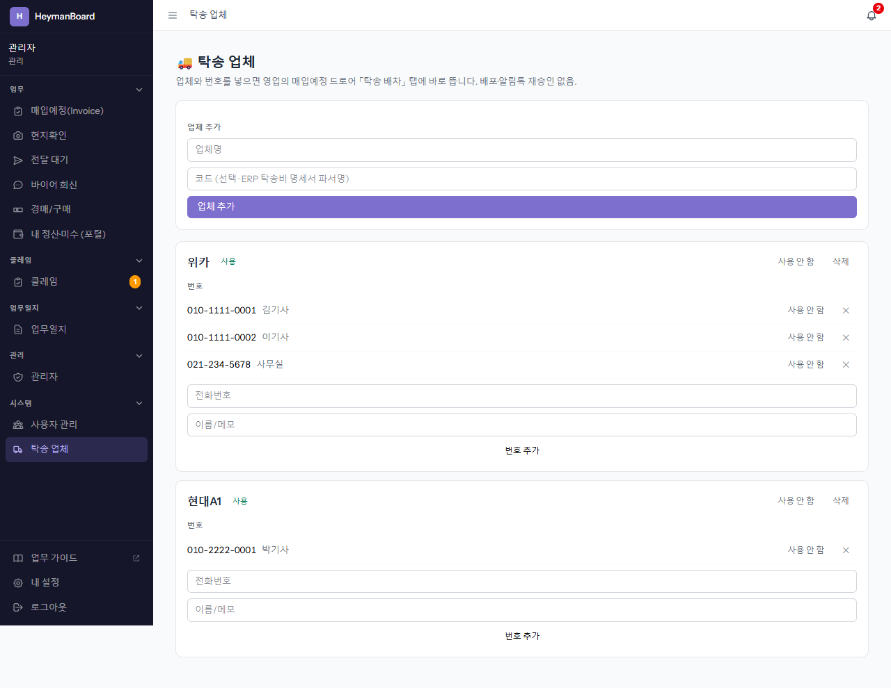
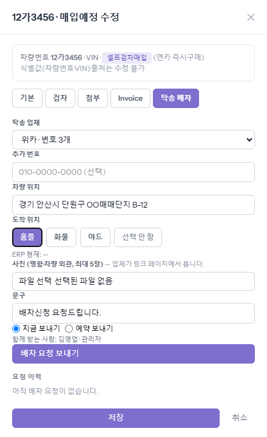
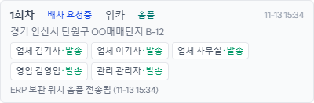
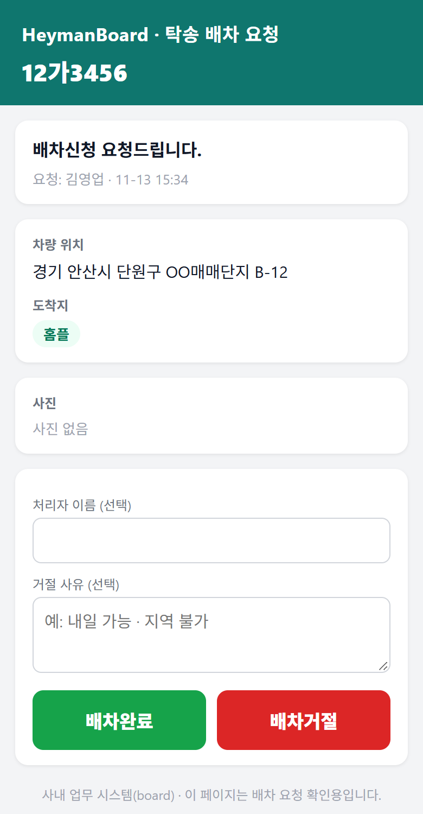
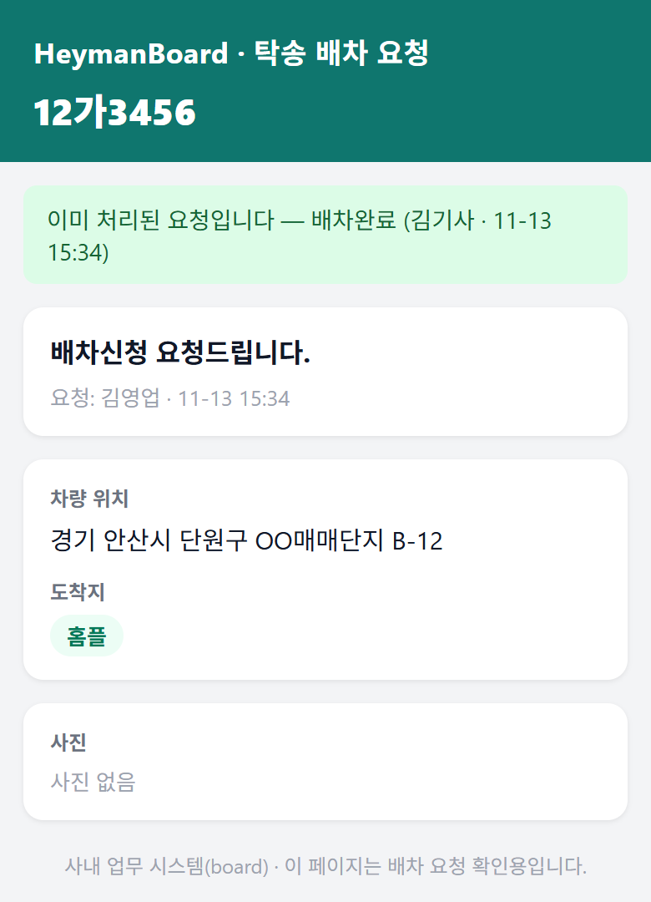
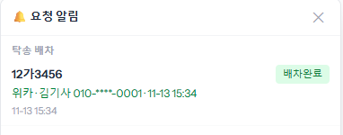
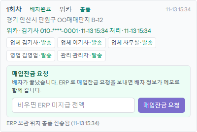
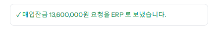
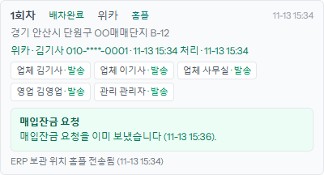

사이드바 「탁송 업체」에서 업체명을 적고 [업체 추가]를 누른 뒤, 그 업체 아래에 전화번호와 이름을 적고 [번호 추가]를 누릅니다. 번호는 여러 개 넣을 수 있고, 넣는 즉시 영업 화면에 뜹니다.
이 화면은 관리 이상만 보입니다. 영업 화면에 업체가 하나도 없으면 「등록된 업체가 없습니다」라고 나오니 관리에게 추가를 부탁하세요.

「매입예정(Invoice)」 목록에서 차 줄을 누르면 오른쪽에 창이 열립니다. 위쪽 탭 가운데 [탁송 배차]를 누릅니다. 이 탭은 차가 어느 단계에 있든 열립니다.
아래 순서로 적습니다.
· 「탁송 업체」 — 보낼 업체를 고릅니다. 그 업체에 등록된 번호 전부에게 갑니다.
· 「추가 번호」 — 목록에 없는 번호 하나를 더 넣을 때만 적습니다.
· 「차량 위치」 — 차가 서 있는 주소를 한 줄로 적습니다.
· 「도착 위치」 — 홈플·화물·야드 가운데 차가 갈 곳을 누릅니다.
· 「사진」 — 명함이나 차량 외관을 최대 5장까지 붙입니다. 업체가 링크 화면에서 봅니다.
· 「문구」 — 그대로 두거나 고쳐 씁니다.
「함께 받는 사람」에 본인과 담당 관리 이름이 보이는지 확인하고 [배차 요청 보내기]를 누릅니다. 나중에 보내려면 「예약 보내기」를 고르고 「보낼 시각」을 정합니다.

보내면 위쪽에 「배차 요청을 보냈습니다 (수신 5명).」이 뜨고, 아래 「요청 이력」에 1회차가 「배차 요청중」으로 생깁니다. 누구에게 갔는지도 이름표로 보입니다.
고른 「도착 위치」는 ERP 의 보관 위치에도 같이 적힙니다. 맨 아래 「ERP 보관 위치 홈플 전송됨」이 그 표시입니다.

사진은 알림톡에 실리지 않습니다. [배차 확인] 버튼을 누르면 나오는 화면에서 봅니다. 영업과 관리도 같은 알림톡을 받지만, 그 버튼으로는 보기만 할 수 있습니다.
템플릿 board_transport_request · 버튼 = 수신자마다 다른 서명 링크(5일) /a/transport/{요청}?r={수신자}
본문 = AlimtalkTemplates::render() 결과 그대로(회사명은 인스턴스별: 헤이맨 / 싼카)
감사 행 transport_request_create → transport_request_sent · ERP 보관 위치 = transport_location_sent
업체 담당자는 로그인 없이 이 화면을 봅니다. 차량 위치·도착지·사진을 확인하고 「처리자 이름」을 적은 뒤 [배차완료]를 누릅니다. 못 가면 「거절 사유」를 적고 [배차거절]을 누릅니다.

번호가 여러 개여도 먼저 누른 한 사람의 답으로 정해집니다. 그 뒤에 다른 사람이 열면 「이미 처리된 요청입니다」와 함께 누가 언제 처리했는지만 보입니다.

board 화면 오른쪽 위 종에도 같은 내용이 뜹니다. 휴대폰 알림을 켜 두었으면 폰으로도 옵니다. 종의 그 줄을 누르면 그 차의 「탁송 배차」 탭이 바로 열립니다.

템플릿 board_transport_result · 수신 = 요청의 영업·관리 수신자 · 웹푸시 url = /listings?edit={매물}
감사 행 transport_request_decided(처리자 전화는 가운데 마스킹, 업체 IP 포함)
「탁송 배차」 탭 「요청 이력」이 「배차완료」로 바뀌고 그 아래 「매입잔금 요청」 칸이 생깁니다. 금액을 적거나, 비워 두면 ERP 에 남아 있는 미지급 금액 전부를 요청합니다. [매입잔금 요청]을 누르면 금액을 확인하는 창이 한 번 뜹니다.

보내고 나면 위쪽에 아래 안내가 뜨고, 칸은 「매입잔금 요청을 이미 보냈습니다」로 바뀝니다. 배차 정보(업체·처리자·시각)가 메모로 함께 갑니다.


포털 [매입잔금]과 같은 ERP 호출(등록 영업 명의) · 금액 비움 = ERP 지급대기 행의 미지급 전액 note = "배차: 업체 · 처리자 010-****-0000 · 일시" · 감사 행 transport_balance_request
매입잔금 요청은 ERP 담당자에게 알림톡으로 가고, 담당자가 ERP 에서 확인하거나 거절합니다. 결과는 board 종과 포털 「재고」 탭의 그 차 줄에 뜹니다. 이 뒤는 「입금요청」 가이드와 같습니다.